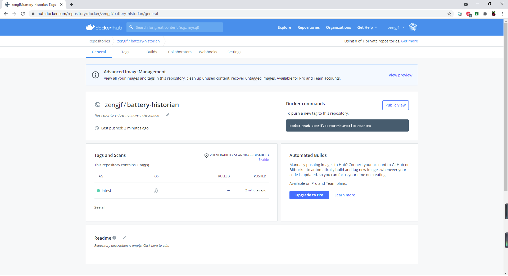

Android Docker New
学习如何创建自己的Docker，后续准备自己处理Docker
参考文档
创建推送容器镜像
桌面版登录docker
docker pull runcare/battery-historian
Using default tag: latest latest: Pulling from runcare/battery-historian f7277927d38a: Pull complete 8d3eac894db4: Pull complete edf72af6d627: Pull complete 3e4f86211d23: Pull complete ac5d6e8f41a3: Pull complete 89e1cca7c291: Pull complete 1c6b579f97fc: Pull complete a73d3370a7dc: Pull complete 52c70f621a64: Pull complete 179010a8bccd: Pull complete 28e23dff79a8: Pull complete 0091c74a4cdb: Pull complete 20a67986b74d: Pull complete 9ca8867c1f1f: Pull complete Digest: sha256:1d1c380419eb28f0667f26bc42cff490cd8043d7dbe40493ded309d668e13fec Status: Downloaded newer image for runcare/battery-historian:latest docker.io/runcare/battery-historian:latest
docker images
REPOSITORY TAG IMAGE ID CREATED SIZE runcare/battery-historian latest 422db14cf445 13 months ago 1.13GB
docker run -ti –name battery-historian -d runcare/battery-historian
3dbb0fd5275903aed032401bfcb9fbd62f3c0e7fd8d13fe6d0bc42aebe5e6699
docker ps
CONTAINER ID IMAGE COMMAND CREATED STATUS PORTS NAMES 3dbb0fd52759 runcare/battery-historian "battery-historian -…" 3 minutes ago Up 3 minutes 9999/tcp battery-historian
docker commit -a “zengjf” -m “this is test” 3dbb0fd52759 zengjf/battery-historian
sha256:35aad6c74fce19ca37a8c04b144832c8afb06d4c23a5ccfc2cee6f9e3d95c263
docker commit -a “zengjf” -m “this is test” 3dbb0fd52759 zengjf/battery-historian:v1
docker images执行的时候会：TAG -> v1
docker images
REPOSITORY TAG IMAGE ID CREATED SIZE zengjf/battery-historian latest 35aad6c74fce 41 seconds ago 1.13GB runcare/battery-historian latest 422db14cf445 13 months ago 1.13GB
docker rmi 35aad6c74fce
docker rmi zengjf/battery-historian
docker push –disable-content-trust zengjf/battery-historian
Using default tag: latest The push refers to repository [docker.io/zengjf/battery-historian] 6f4f5ed6a7c8: Mounted from runcare/battery-historian 8262793ec9ed: Mounted from runcare/battery-historian b3a94af713c2: Mounted from runcare/battery-historian 30512634cec0: Mounted from runcare/battery-historian 2ad6c3c3c07c: Mounted from runcare/battery-historian 42e4ffa375d2: Mounted from runcare/battery-historian 0a9f08f95895: Mounted from runcare/battery-historian 11aab68dfc13: Mounted from runcare/battery-historian e6ab394032ae: Mounted from runcare/battery-historian 7c0520a37f29: Mounted from runcare/battery-historian e79142719515: Mounted from runcare/battery-historian aeda103e78c9: Mounted from runcare/battery-historian 2558e637fbff: Mounted from runcare/battery-historian f749b9b0fb21: Mounted from runcare/battery-historian latest: digest: sha256:7402b93de6d98dbaab23c6d621557f2d23ea10ed22239abee7e40128c5e3f80d size: 3251
docker push –disable-content-trust zengjf/battery-historian:v1
https://hub.docker.com/repositories
https://hub.docker.com/repository/docker/zengjf/battery-historian

重新pull
docker rmi zengjf/battery-historian
Untagged: zengjf/battery-historian:latest Untagged: zengjf/battery-historian@sha256:7402b93de6d98dbaab23c6d621557f2d23ea10ed22239abee7e40128c5e3f80d Deleted: sha256:de90fbc8e494cfea43aeb023fec6ec4ffd48cb3b4250848779ab6c53dd8ee718
docker images
REPOSITORY TAG IMAGE ID CREATED SIZE runcare/battery-historian latest 422db14cf445 13 months ago 1.13GB
docker pull zengjf/battery-historian:latest
latest: Pulling from zengjf/battery-historian f7277927d38a: Already exists 8d3eac894db4: Already exists edf72af6d627: Already exists 3e4f86211d23: Already exists ac5d6e8f41a3: Already exists 89e1cca7c291: Already exists 1c6b579f97fc: Already exists a73d3370a7dc: Already exists 52c70f621a64: Already exists 179010a8bccd: Already exists 28e23dff79a8: Already exists 0091c74a4cdb: Already exists 20a67986b74d: Already exists 9ca8867c1f1f: Already exists Digest: sha256:7402b93de6d98dbaab23c6d621557f2d23ea10ed22239abee7e40128c5e3f80d Status: Downloaded newer image for zengjf/battery-historian:latest docker.io/zengjf/battery-historian:latest
docker images
REPOSITORY TAG IMAGE ID CREATED SIZE zengjf/battery-historian latest de90fbc8e494 16 minutes ago 1.13GB runcare/battery-historian latest 422db14cf445 13 months ago 1.13GB